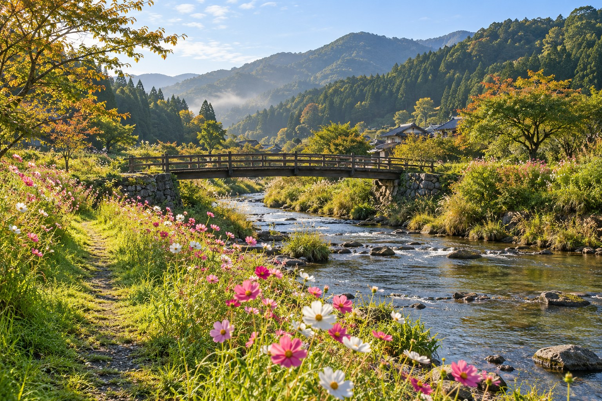

A LITTLE DETOUR, A LOVELY DAY.AI生成イメージ・実在の観光地ではありませんINFORMATION秋の散策ガイドを公開しました（架空のお知らせ）↗
FIND YOUR KOMOREBI
今日は、どんな寄り道？
花と川と、まちの小さな楽しみ。
気になる景色から、旅をはじめよう。
3つの寄り道
A LETTER FROM THE SEASON
AUTUMN 01
ゆっくり歩くほど、
秋が見つかる。
いつもより少し遠回りして、
草花の色や、水面の光を眺める。
そんな一日を、こもれびで。
NEWS & STORIES
まちからの便り。
お知らせ・読みものの表示サンプル
BEFORE YOUR TRIP
旅のまえに。
実際の公開時には、交通情報やパンフレットへ案内します。